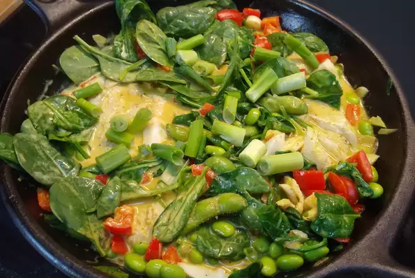

Coconut Curry Haddock
Don't you love one-pot recipes? I love making them. As much as I love to cook,
not having a big mess makes me very happy. The curry blend smelled so good and the haddock took on the flavors perfectly!
Thanks again, City Fish! This is also a 30-minute meal and a paleo dish! Keep it healthy...

Ingredients:
- 1 tablespoon olive oil
- 1 pound haddock, cut into cubes
- ¼ cup chopped red bell pepper
- 1 shallot, finely chopped
- 1 clove garlic, minced
- 1 (13.5 ounce) can full-fat coconut milk
- 2 teaspoons red curry paste
- 2 teaspoons curry powder
- ¾ teaspoon ground coriander
- ¾ teaspoon ground turmeric
- 2 cups baby spinach
- 1 cup shelled edamame
- 2 green onions, sliced
Directions:
Step 1:
-
Heat olive oil in a large pot until very hot. Add haddock; cook until browned, about 3 minutes per side.
Add red bell pepper, shallot, and garlic; cook and stir until shallot softens, about 3 minutes.
Step 2:
-
Pour coconut milk into the pot. Whisk in curry paste, curry powder, coriander, and turmeric.
Reduce heat; simmer until coconut milk is reduced by 1/4, 6 to 7 minutes. Stir in spinach and edamame.
Cook until spinach is wilted and edamame is heated through, 3 to 4 minutes. Sprinkle green onions over curry.